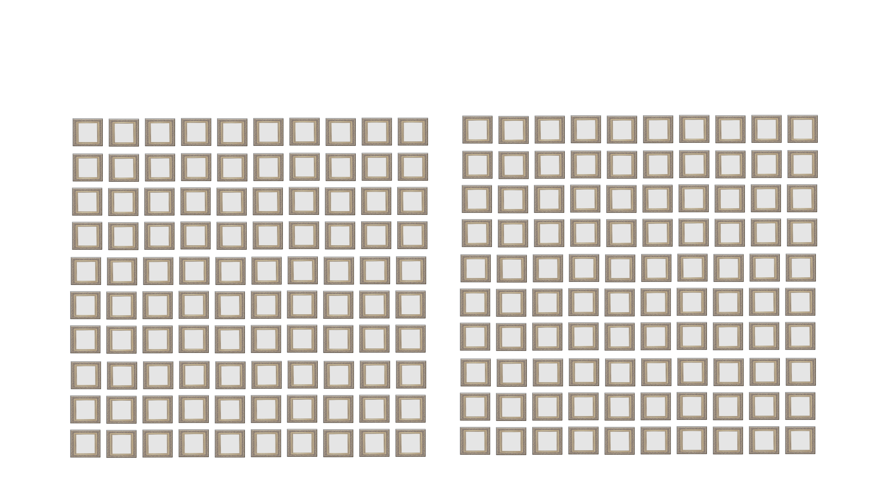
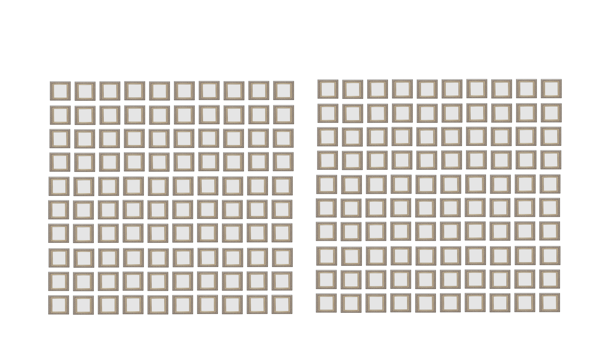
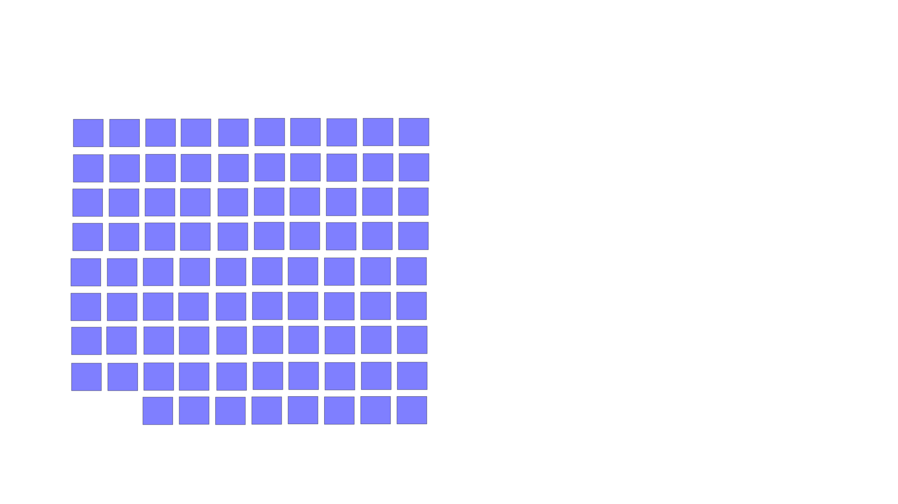
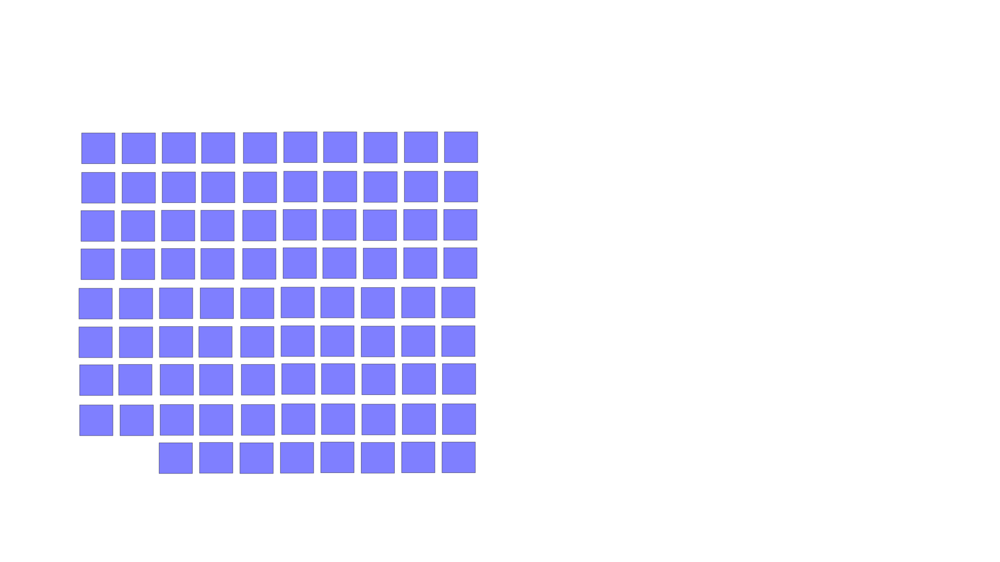

For centuries, women have been underrepresented in the art world. While they often played a crucial role as the (often nude) subject on a canvas, they were rarely credited as the creator.
This stands true even today. Less than 12 percent of Christie’s auctions of paintings are by artists who identity as female.
The remaining 88 percent are by predominantly white men.
By breaking down barriers and proving more flexibility, the crypto space was prophiciced to be more gender-neutral and democratic towards artists seeking to enter the digital art world.
In reality, the gender gap is even larger. Only 5 percent of NFTs sold online are by artists who identify as female.
22 percent are by artists who’s gender is unknown and 2 percent are collectives.

 



 
